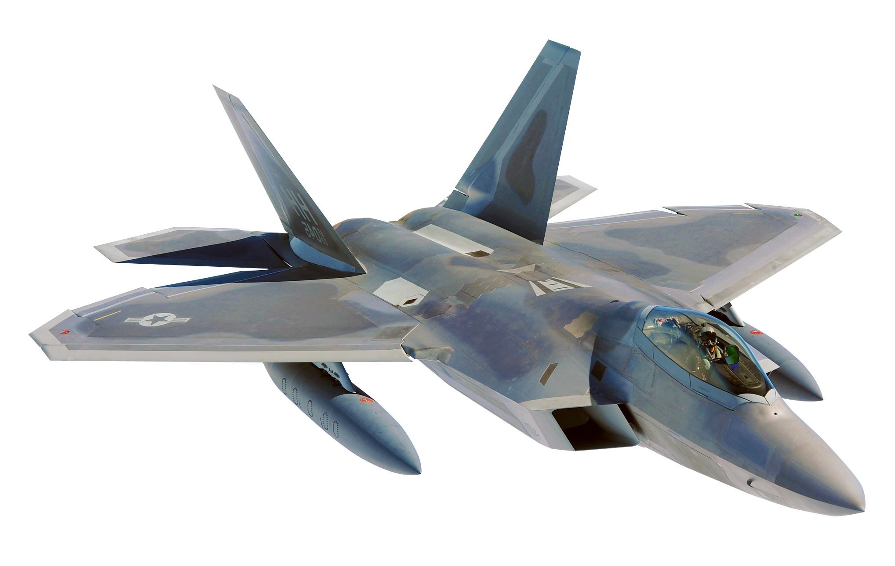

Záliby
Počítačové hry
Počítačové hry hraju už od svého útlého věku a mojí první hrou bylo citie skylines kterou mi koupil táta a je o stavění města, hra mě uchvátila na tolik že ji i po několika letech stále hraju a nepřestává mě bavit.
Moje současně nejoblíbenější hry jsou s vojenskou tématikou jako War thunder nebo Arma3
War thunder je hra podobná world of tanks kterou jsem taky hrál ale War thunder se mi zalíbíl více. Ve hře si vylepšujete tanky, letadla a lodě se kterými v bitvách bojujete proti ostatním hráčům. V bitvách si za každou aktivitu vyděláte výzkumné body
které pak můžete utratit za výzkum modifikací techniky nebo dalších strojů které si zoumáte od Druhoválečných až po ty moderní.
Hra arma3 je vojenský sandbox kde si můžete postavit vlastní scénář který poté můžete s hrát s ostatními. Do hry si můžete stáhnout sposty módů které přidávají různé zbraně, stroje, mapy nebo celé scénáře.
Ve scénářích můžete vytovřit misi ve kterých budete mít za úkol vše od Dobití jedoho domu až po dobývání celé země se stovkou hráčů a to je to co mě na té hře baví.
Taekwondo
Taekwondo je Korejské bojové úmění sebeobrany které vymyslel Generál Čoi Ghon Hi 10.dubna roku 1954 v Koreji.
K Taekwondu jsem se dostal přes kamaráda který mě a mého dalšího kamaráda pozval na jejich trénink.
Taekwondo cvičíme v tělocvičně Sedmé Základní školy pod vedením trenéra Jana Gavury.
Taekwondo se skládá ze sebeobrany, sestav, speciálních technik, přeřážení a soubojů
Sebeorbana je nauka o reálné sebeobraně na ulici kde nás trenére učí jak se bránit
Sestava neboli TUl je standardizovaný vzor cvičení. Systém výuky zahrnuje 24 vzorů technických sestav. Umění tulů je inspirované ideály, které zosobňují významné osobnosti korejské historie. Kažný tul vyjadřuje myšlenky a skutky těchto výrazných lidí.
Speciální techniky jsou většinou kopy ve výskoku, kterými se snažíme prorazit desku která je okolo dvou metrů vysoko
Přerážení je silové rozbijení přerážecích desek různými technikami. Je důležité mít správnou techniku a úbtížnost se zvyšuje přidáním desek
Souboj je zápas dvou lidí proti sobě kde se hodnotí kolikrát byl zasažen. Jeden bod je za úder na hlavu i tělo, dva body jsou za kop na tělo a tři za kop na hlavu.
Zároveň bojovník musí dodržat pravidla jako například žádné techniky pod pásek, nesmí se dotknout země čímkoliv jiným než nohou atd.
Airsoft
Airosft je sport kde většinou dva týmy bojují proti sobě s replikami zbraní které střílejí plastové kuličky. Když hráč dostane zásah zvedne ruku a řekne že dostal a vrací se na mrtvoliště kde podle pravidel čeká a poté se může dostat zpátky do hry.
K airsoftu jsem se dostal tak že jsem si šel vyzkoušet hru na místní hřiště na radouči v betonárce kde mě hra začala bavit ale hned první hru jsem dostal ránu do obličeje kde mi to natrhlo tvář a tak jsem v pokračování váhal.
Nakonec jsem se ve hře rozhodl pokračovat a přidal jsem se do airsoft klubu na betonárce kde se každý pátek dvě hodiny hrálo.
Od kamaráda jsem si půjčil jeho starou repliku zbraně m4 a pravidelně přes zimu roku 2022 chodil hrát airsoft. A učil se taktice a tomu jak zbraně fungují
V airosftu jsou tři typy pohonu zbraně
Manuální kde se pružina zbraně natahuje manuálně pákou zbraně. Většinou se tento typ používá u odstřelovacích pušek.
Elektrické kde zbraň pohání baterka která je uložena ve zbrani. Tento styl je nejvíce rozšířený
Plynový kde zraň pohání ply většinou uložený v zásobníku zbraně. Plyn umožňuje aby zbraň měla malý zpětný ráz a aby závěr zbraně lítal dozádu jako u ostrých zbraní
Aby zásah kuličkou tolik nebolel udávají se často limity výkonu zbraně tak aby byla hra bezpečná. Díky limitům zbraň vetšinou dolítne okolo padesáti metrů